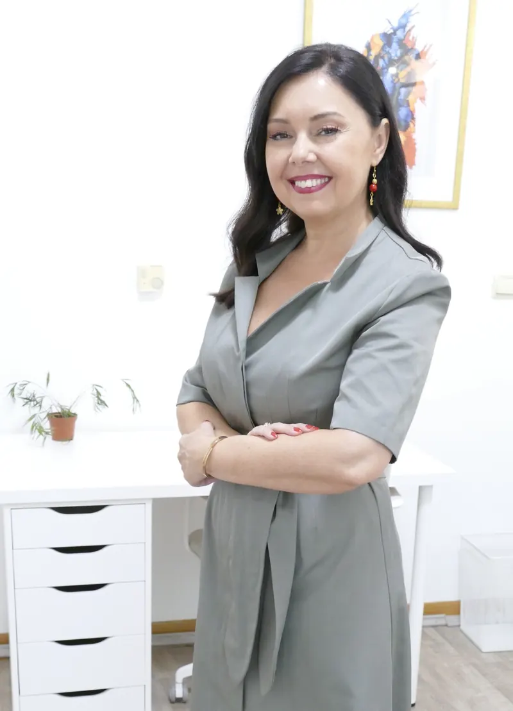

Lektura „u tri ruke“
Prvo čitanje za korekturu i tehničko uređenje, drugo za pravopis i gramatiku, treće za stil i ritam – pa još jedna završna provera.
Lektura · Korektura · Redaktura
Neka svaka napisana reč odiše pismenošću. Od romana i doktorske disertacije do ugovora, sajta ili AI teksta – filolozi sa položenim stručnim ispitima doteruju vaš tekst, a vaš stil ostaje vaš.
Pozovite nas+381 65 36 70 320

O nama
„Lektura Libra“ od 2016. godine okuplja diplomirane filologe sa bogatim iskustvom u lektorisanju i položenim stručnim ispitima. Vođeni željom da svaki tekst dovedemo do savršenstva, sarađivali smo sa više od hiljadu zadovoljnih klijenata.
Na čelu tima je Ana Todorović-Radetić – filolog, prevodilac, profesor engleskog jezika i autorka dve knjige. Dakle, vaš rukopis čita neko ko i sam piše.
Ana Todorović-Radetić je diplomirani filolog za engleski jezik i književnost; anglistiku je završila na Filozofskom fakultetu u Nišu. Ljubav prema engleskom jeziku i književnosti, uz odlično poznavanje ruskog i bugarskog, usmerila ju je ka prevodilaštvu i lekturi.
Od 2016. godine vodi prevodilačku agenciju „Prevodioci Libra“ u Beogradu, gde se bavi prevođenjem tekstova svih nivoa stručnosti i vodi brojne prevodilačke i lektorske projekte.
Kao profesor engleskog jezika radila je u Građevinskoj tehničkoj školi na Zvezdari i školama stranih jezika „Moqui“ i „Memphis“ u Beogradu. Kurseve za odrasle držala je za Banku Intesa i kompaniju Ball Packaging Europe, kao i za Privrednu komoru Srbije, Direktorat za civilno vazduhoplovstvo, Centar za edukaciju privrednika i Ministarstvo zdravlja.
Mape uma, tehniku koju je popularizovao Toni Buzan, koristi u predavanju gramatike, a sa tim ciljem kreirala je i edukativni sajt grammarmindmaps.com.
IELTS Academic (British Council, 2008), kao i veliki broj seminara iz struke i srodnih oblasti od 2006. godine do danas, među kojima su:
Svaki tekst poveravamo filologu za odgovarajući jezik, a stručne tekstove saradnicima koji najbolje poznaju datu oblast i njenu terminologiju. Sa klijentom smo u stalnom kontaktu, pa sve nedoumice rešavamo zajedno – pre nego što postanu greške.
Po čemu se razlikujemo
Ispravljamo greške, a ne autora. Evo šta dobijate kada nam poverite tekst.
Prvo čitanje za korekturu i tehničko uređenje, drugo za pravopis i gramatiku, treće za stil i ritam – pa još jedna završna provera.
Verzija sa vidljivim izmenama (Track Changes) da vidite svaku ispravku, i čista verzija spremna za štampu ili objavljivanje.
Pre nego što se odlučite, besplatno lektorišemo dve strane vašeg teksta. Uverite se u kvalitet, pa tek onda nastavljamo.
Pravo, medicina, ekonomija, IT, građevina, umetnost – stručne tekstove dobijaju lektori koji poznaju terminologiju.
Kod književnih tekstova unapred dogovaramo nivo stilskih intervencija, kako bi tekst bio doteran, a vaš izraz ostao prepoznatljiv.
Srpski, engleski i još tridesetak jezika. Kraći tekstovi često su gotovi istog dana, a dogovoreni rok se uvek poštuje.
Tekst nastao ili preveden uz pomoć veštačke inteligencije činimo prirodnim, jasnim i tačnim – uz proveru prevoda prema originalu.
Cena po strani je poznata unapred, bez skrivenih troškova. Fizičkim i pravnim licima izdajemo račun.
Cene
Cena se računa po prevodilačkoj strani od 1.800 karaktera sa razmacima. Pesma od 800 karaktera ima 0,44 strane, a roman od 200.000 karaktera nešto više od 111.
Ostali strani jezici (nemački, španski, ruski, kineski i drugi): od 6 do 15 € po strani. Cene se obračunavaju u dinarima po srednjem kursu NBS na dan formiranja konačne cene. Nismo u sistemu PDV-a.
Pitanja i odgovori
Niste našli odgovor? Pozovite nas ili pošaljite upit – odgovaramo brzo.
Postavite pitanjeDetaljan i sistematičan pregled materijala, sa ciljem da finalni tekst bude pregledan, jasan i jezički korektan:
Naziv lektura potiče od latinskog „legere“ – čitati. Lektor se dubinski bavi tekstom: pravopisom, gramatikom, stilom i smislom napisanog. Korektura (od „corrigere“ – ispraviti) je završno uređenje nakon lekture i prelamanja: uklanjanje preostalih slovnih grešaka, višestrukih razmaka, pogrešnog prenošenja reči u novi red i tehničkih propusta.
Danas se najčešće rade kao objedinjena usluga, jer se samo tako postiže potpuno spreman tekst.
Naravno. Lekturu nudimo za sve jezike na koje i sa kojih prevodimo – tridesetak njih, među kojima su engleski, nemački, francuski, italijanski, španski, portugalski, ruski, bugarski, makedonski, slovenački, češki, rumunski i arapski. Po potrebi tekst najpre prevodimo, a zatim lektorišemo i prevod.
Da. Dijalekti nemaju standardizovana pravopisna pravila, pa lektor, pored uklanjanja omaški i uređivanja interpunkcije, uvodi doslednost u pisanju karakterističnih izraza. Kod ovakvih tekstova posebno nam je važna komunikacija sa autorom.
Bez ograničenja: romane, priče, poeziju, drame, dnevnike i putopise; seminarske, diplomske i master radove, doktorske disertacije, članke i studije; brošure, uputstva, udžbenike i priručnike; blogove, sajtove, oglase, reklame i titlove. Lektorišemo i PowerPoint prezentacije i Excel tabele.
Da – iz prava, ekonomije i marketinga, medicine i farmacije, računarstva, mašinstva i građevinarstva, ekologije, turizma, umetnosti, sporta i mnogih drugih oblasti. Stručne tekstove poveravamo lektorima specijalizovanim za datu oblast.
Lekturu radimo u Wordu sa uključenom opcijom Track Changes, pa je svaka ispravka istaknuta i jasno označena. Dobijate dve verzije: sa vidljivim izmenama i „čistu“ verziju sa prihvaćenim izmenama, spremnu za dalju obradu ili objavljivanje.
Ne. Lektor uklanja pleonazme i upadljiva ponavljanja, deli preduge rečenice i menja nejasne konstrukcije, ali ne „ide predaleko“ i ne narušava autentičan stil – što je posebno važno kod književnih tekstova. Ako vam je potrebna dublja obrada strukture i stila, to je redaktura, koju radimo uz konsultacije sa autorom.
Nikada. Prvo čitanje posvećeno je korekturi i tehničkom uređenju, drugo pravopisu i gramatici, a treće stilu. U svakom narednom čitanju hvatamo i ono što je eventualno promaklo, a na kraju još jednom pregledamo konačnu verziju sa prihvaćenim izmenama.
Lektor tehnički uređuje tekst (format, margine, prored, font, naslovi, poravnanje), pa je finalna verzija spremna za štampu. Za publikacije sa fotografijama i složenim prelomom sarađujemo sa grafičkim dizajnerima, a za tekstove namenjene sajtovima i sa SEO stručnjacima.
Najjednostavnije je imejlom, na prevodiocibg@gmail.com. Najčešće dobijamo Word dokumente, ali lektorišemo i PowerPoint prezentacije, Excel tabele i druge formate. Lektorisan tekst vraćamo imejlom u dogovorenom roku.
Zavisi od obima, sadržaja, stručnosti i količine potrebnih intervencija. Kraći tekstovi često su gotovi istog dana, a za obimnije materijale dajemo preciznu procenu – i dogovoreni rok uvek poštujemo.
Da. Pravnim licima i preduzetnicima izdajemo račun, a fizičkim licima fiskalni račun, koji možemo dostaviti i elektronski, zajedno sa lektorisanim tekstom.
Reference
Sarađivali smo sa nekoliko hiljada klijenata – od pojedinaca i istaknutih autora do vodećih kompanija, ustanova i institucija.
Recenzije
Izvodi iz recenzija koje su klijenti ostavili na Google-u.
Sarađivali smo na lekturi moje knjige na srpskom i njenom prevodu na engleski, pa smatram da mogu relevantno da ostavim ocenu. Sve pohvale za posvećenost, uvažavanje mojih želja i poštovanje rokova – uz ljubaznu, profesionalnu komunikaciju i brzo odgovaranje na svaki zahtev. Sve to po razumnoj ceni.
Dugogodišnja uspešna i izuzetno prijatna saradnja, zahvaljujući visokom nivou profesionalizma! Brzi, efikasni i dosledni – HVALA NA SVEMU!
Saradnja sa agencijom je protekla odlično – pružili su brzu i kvalitetnu uslugu, uz krajnje profesionalnu i ljubaznu saradnju. Iskrena pohvala i preporuka!
Saradnja na profesionalnom nivou: brzi, tačni, odgovorni i ljubazni. Strpljivi sa klijentima, izlaze u susret svim našim prohtevima. Sve pohvale i preporuke za saradnju.
Veoma profesionalni i uslužni, spremni da udovolje individualnim potrebama klijenta da bi postigli optimalan rezultat.
Sve pohvale, odlična komunikacija. Brzi i efikasni!
Kontakt
Recite nam kakav je tekst, koliko je obiman i do kada vam treba. Šaljemo cenu i rok, a na zahtev i dve strane besplatne probne lekture.